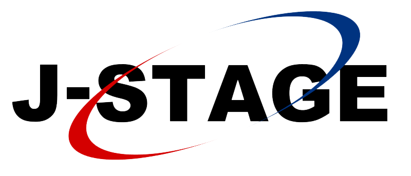

文献情報
査読付き学術誌論文
-
池川航史, 西島直.
ブロックチェーンを用いた信頼ある機密データの管理および利活用基盤.
電子情報通信学会, 電子情報通信学会論文誌D, Vol.J105-D, No.11, pp.653-656, November 2022.
 PDF
PDF
 IEICE
IEICE
-
吉田有花, 鶴田真也, 池川航史, 阿部哲也, 志築文太郎, 田中二郎.
静電容量に基づくブロックシステム.
日本ソフトウェア科学会, コンピュータ ソフトウェア Vol.34 (2017) No.2, 2017年05月, pp. 2_93-2_101, 9 pages.
PDF
J-stage
査読付き国際会議論文（口頭発表）
-
Koshi Ikegawa, and Buntarou Shizuki.
Tesla Blocks: Magnetism-Based Tangible 3D Modeling System using Block-Shaped Objects.
In Proceedings of the 30th Australian Conference on Human-Computer Interaction (OzCHI 2018), ACM, December 2018, pp. 411-415.
PDF
ACM
-
Koshi Ikegawa, Akira Ishii, Kazunori Okamura, Buntarou Shizuki, and Shin Takahashi.
Investigating Effects of Users’ Background in Analyzing Long-Term Images from a Stationary Camera.
In Proceedings of the 20th International Conference on HIMI 2018, Held as Part of HCI International 2018 (HCII 2018), Part
I, LNCS 10904, Springer, July 2018, pp. 490-504.
PDF
Springer
査読付き国際会議論文（ポスター・デモ）
-
Minto Funakoshi, Koshi Ikegawa, and Buntarou Shizuki.
Capacitance- and Phase-Based Detection Technique of Finger Bend and Touched Hand Using Ring-Shaped Device.
CHI 2019 symposia on Asian CHI Symposium: Emerging HCI Research Collection, May 2019, 7 pages.
Unpublished
-
Takuto Nakamura, Koshi Ikegawa, Shogo Tsuchikiri, Keita Saito, Kazushi Kamezawa, Yuki Hashimoto, and Buntarou Shizuki.
Touch Interface Design System in Multilayered Urushi Circuit.
CHI 2019 symposia on Asian CHI Symposium: Emerging HCI Research Collection, May 2019, 7 pages.
Unpublished
-
Koshi Ikegawa, Shuhei Aoyama, Shogo Tsuchikiri, Takuto Nakamura, Yuki Hashimoto, and Buntarou Shizuki.
Investigation of Touch Interfaces Using Multilayered Urushi Circuit.
In Proceedings of the 12th International Conference on Tangible, Embedded, and Embodied Interaction (TEI 2018),
ACM, March 2018, pp. 115-122.
PDF
ACM
-
Koshi Ikegawa, Shuta Nakamae, and Buntarou Shizuki.
A Block System with Magnetism-based Structure Recognition
CHI 2017 symposia on Asian CHI Symposium: Emerging HCI Research Collection, May 2017, 8 pages.
PDF
-
Koshi Ikegawa, Masaya Tsuruta, Tetsuya Abe, Arika Yoshida, Buntarou Shizuki, and Shin Takahashi.
Lightweight Capacitance-based Block System for 3D Space Interaction
In Proceedings of the 2016 ACM on Interactive Surfaces and Spaces (ISS 2016), ACM, November 2016, pp. 307-312.
PDF
ACM
査読付き国内会議論文（口頭発表）
-
永井美波, 池川航史, 志築文太郎, 高橋伸.
日本語フリック入力を用いたモバイル端末の把持姿勢識別.
第25回インタラクティブシステムとソフトウェアに関するワークショップ論文集 (WISS 2017), 日本ソフトウェア科学会, 2017年12月, pp. 113-118.
PDF
その他会議論文
-
Koshi Ikegawa, Nao Nishijima, Yoji Ozawa, Katsuhiro Fukunaka, Hironori Emaru, Masaru Hisada, Akihito Kaneko, Eiichi Araki, Ai Okada, and Yuichi Shiraishi.
Secure and Traceable System for Genomic Data Sharing Using Hyperledger Fabric Blockchain.
2020年日本バイオインフォマティクス学会年会 第9回 生命医薬情報学連合大会 (IIBMP2020), 2020年09月.
Unpublished
-
舩越南斗, 池川航史, 志築文太郎, 高橋伸.
位相に基づく指輪型入力デバイスの検討.
情報処理学会研究報告, Vol.2018-HCI-182, No. 34, 6 pages, 2018年8月, 情報処理学会, 2019年03月.
PDF
IPSJ
-
池川航史, 志築文太郎.
磁気計測に基づくブロック型タンジブル3Dモデリングシステム.
第26回インタラクティブシステムとソフトウェアに関するワークショップ論文集 (WISS 2018), 予稿なしデモ・ポスター, 日本ソフトウェア科学会, 2018年09月.
Unpublished
-
池川航史, 中前秀太, 志築文太郎.
磁気計測に基づき構造認識を行うブロックシステム.
インタラクション2017論文集, 情報処理学会, 2017年02月, pp. 707-711.
PDF
IPSJ
-
池川航史, 川上由紀.
遺伝的アルゴリズムにより設計した周波数選択板によるマイクロストリップアンテナの利得向上効果に関する研究.
電子情報通信学会 北陸支部 平成26年度学生による研究発表会, 電子情報通信学会, 2015年03月, 1 page.
Unpublished
学位論文
-
池川航史, （指導教員：志築文太郎）.
ブロック構造物に対する磁気計測に基づく構造認識およびその3Dモデリングシステムへの応用（修士：工学）.
筑波大学 システム情報工学研究科 コンピュータサイエンス専攻, 2019年01月, 73 pages.
Unpublished
-
池川航史, （指導教員：志築文太郎）.
磁気計測に基づくブロック型タンジブルユーザインタフェース（学士：情報メディア科学）.
筑波大学 情報学群 情報メディア創成学類, 2017年01月, 42 pages.
Unpublished
-
池川航史, （指導教員：川上由紀）.
遺伝的アルゴリズムにより設計した周波数選択板によるマイクロストリップアンテナの利得向上効果に関する研究（準学士：電子情報工学）.
福井工業高等専門学校 電子情報工学科, 2015年03月, 35 pages.
Unpublished
OSSコミュニティ活動
査読付き国際会議（口頭発表）
-
Koshi Ikegawa.
Demo: Infrastructure for Managing, Sharing, and Utilizing Sensitive Data using Hyperledger Fabric Private Chaincode Running on Microsoft Azure.
Hyperledger Grobal Forum 2022 (HLGF 2022). September 12-14 2022. The Convention Centre Dublin at Dublin, Ireland.
 Youtube
Slideshare
Speakerdeck
Youtube
Slideshare
Speakerdeck
-
Koshi Ikegawa.
Trust Data Sharing and Utilization Infrastructure for Sensitive Data Using Hyperledger Projects.
Open Source Summit Japan 2021 (OSSJ 2021). December 14-15 2021. Online.
Youtube
Slideshare
Speakerdeck
-
Koshi Ikegawa and Nao Nishijima.
Trust Data Sharing and Utilization Infrastructure for Sensitive Data using Hyperledger Avalon.
Hyperledger Grobal Forum 2021 (HLGF 2021). June 08-10 2021. Online.
Youtube
Slideshare
Speakerdeck
その他講演
-
池川航史.
ブロックチェーンを用いた自己主権型デジタルID管理.
Hyperledger Tokyo - エンタープライズブロックチェーンワークショップ. 2023年10月17日. オンライン開催.
Youtube
Speakerdeck
-
池川航史.
ブロックチェーンを用いた自己主権型デジタルID管理.
WebX – Hyperledger Foundation Workshop. 2023年7月26日. 東京国際フォーラム at 東京都, 日本.
Youtube
Speakerdeck
-
池川航史.
Hyperledger Fabric Private Chaincodeについて.
Hyperledger Tokyo Meetup. 2021年10月07日. オンライン開催.
Youtube
Slideshare
翻訳活動
-
Kirsten Sandberg. [序文：Scott Chamberlin (Intel)、翻訳：池川航史・西島直（日立製作所）、平山毅（日本IBM）]
[原文]Web3 and Sustainability.
[和訳]Web3とサステナビリティ.
-
Alan Majer (Good Robot). [翻訳：池川航史・伊藤哲・永井崇之（日立製作所）、浅沼岳樹（富士通）編集：谷口暢夫]
[原文]The Carbon Footprint of NFTs: Not All Blockchains Are Created Equal.
[和訳]NFT カーボンフットプリント：すべてのブロックチェーンが等しいわけではない.
特許
-
[特開2023-168952] データ管理システム及びデータ管理方法
出願人/特許権者：株式会社日立製作所. 発明者：池川 航史
出願日：2022年05月16日.
 Google Patents
Google Patents
 J-PlatPat
J-PlatPat
-
[特開2022-183596] 機微データ管理システムおよび機微データ管理方法
出願人/特許権者：株式会社日立製作所. 発明者：池川 航史, 西島 直, 小澤 洋司.
出願日：2021年05月31日.
Google Patents
J-PlatPat
-
[特許7408499] 分散台帳管理システム、分散台帳管理方法、およびノード
出願人/特許権者：株式会社日立製作所. 発明者：池川 航史, 西島 直, 小澤 洋司.
出願日：2020年07月06日.
Google Patents
J-PlatPat
受賞
-
Hyperledger Foundation
Hyperledger Foundation Certificate of Appreciation,
2022年12月09日.
-
平成30年度 筑波大学大学院
コンピュータサイエンス専攻長表彰受賞,
2019年03月25日.
-
平成29年度 筑波大学大学院
コンピュータサイエンス専攻長特別表彰受賞,
2018年03月23日.
-
平成28年度 筑波大学
情報学群長表彰受賞,
2017年03月24日.
招待講演
-
福井工業高等専門学校 電子情報工学科 3年生向け
卒業生による進路指導講演,
2018年10月30日.
-
福井工業高等専門学校 電子情報工学科 4年生向け
卒業生による進路指導講演,
2017年10月06日.
資格・免許
-
The Linux Foundation, Certified Hyperledger Fabric Administrator (CHFA).
2020年10月23日（3年間有効：2023年10月24日失効予定）.
-
IPA 独立行政法人 情報処理推進機構, 基本情報技術者試験(FE) 合格.
2013年05月20日.
経歴
- 2015年03月31日｜福井工業高等専門学校 電子情報工学科 卒業 (準学士: 電子情報工学)
- 2015年04月01日｜筑波大学 情報学群 情報メディア創成学類 三年次編入学
- 2017年03月24日｜筑波大学 情報学群 情報メディア創成学類 卒業 (学士: 情報メディア科学)
- 2017年04月01日｜筑波大学 大学院 システム情報工学研究科 コンピュータサイエンス専攻 入学
- 2019年03月25日｜筑波大学 大学院 システム情報工学研究科 コンピュータサイエンス専攻 修了 (修士: 工学)
- 2019年04月01日｜株式会社日立製作所 研究開発グループ 入社